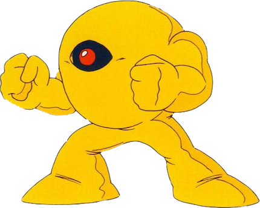

This is the main walkthrough section of the website. You can play through the levels in the order suggested in the table of contents below; there will be buttons at the bottom of each section to take you to the next and previous parts. Alternatively, you can click on one of the levels in the table if you need help with a specific level.
Table of Contents
H) Wily's Fortress 1
Reaching The Boss
The final four levels of the game are going to take place one after another in a specific order, with no level select screen in between each one as there has been so far. Naturally, the Wily's Fortress levels are the toughest levels in the game, and you're going to die a lot if this is your first time, but don't give up. The first level's boss is brutal for a first-timer and will catch you totally off guard; beating it will require a lot of practice, great timing and memorisation. A general tip for these levels: conserve your weapon energy. As always, your health bar at the end of a level doesn't matter as it will be full again at the start of the next one. But here, your remaining weapon energy carries over to the next level. You're going to need certain weapon abilities for things in these levels and if you can't use them then you're not going to be able to progress without getting a game over which is the only way your weapons will refill. Yes, it's annoying and not very good game design, but unfortunately the NES era was a very unforgiving time. Note: the boss of this level is weak to the Thunder Beam.
At the start of this level, head right and the first enemy you'll see is a Big Eye. That can't be a good sign of things to come. I wouldn't attempt to kill it because as you shoot it it'll keep moving left and eventually when you defeat it, you'll go right again only to find that it's respawned, which is incredibly not good. So instead, just use the Ice Slasher to freeze it when it makes a high leap; hopefully, there'll be enough space when it's frozen in the air for you to move past underneath. Keep going right and you're going to have to deal with another two of these things... just use the same strategy and hope they jump high.
Soon you'll reach a wall blocked by... blocks. You'll need to unblock these blocking blocks by using Gutsman's block-lifting ability. After the blocks are gone, you'll see a couple of flamethrowers, à la Fire Man's stage. You could opt to freeze these with ice blasts and then use them as platforms but this can be tricky as the height that you freeze them at is important; you won't be able to move up to the next part if the frozen flame is too low or high. You could also just jump up in the small gaps when the flames are low, but this requires really precise jumps at the last second. Personally, I tend to freeze the first one in the right place then just use risky jumps for the last two. It's easy on the last flame as there is more space. Anyway, get past them somehow (don't feel bad if you get burned a couple of times) and climb the ladder to another screen.
No enemies up here but some insta-kill spikes. The big health pickup is very nice but the jump to get it is so demanding, as you really do have to jump at the very last moment. If you miss it, you should still land safely on the ledge below. Make the jumps over the spikes and get over to the left ladder, using it to ascend a screen. Up here, you'll be instantly and unfairly attacked by Kamadomas, so desperately get to the ladder-top and shoot right... you'll probably get hit at least once, unfortunately. Head right and you'll see some more blocks to get rid of with the Super Arm once more. There's also a nice health pickup behind some more blocks at the top of the screen. For the longest time, I just could not figure out how to get this, as you need to use the Magnet Beam to get up to the top right and then the Super Arm to move blocks, but you can't use the two weapons together like that. And then I found out you can also use the Thunder Beam to destroy the blocks... so if you want the health, destroy the blocks from below with Elec Man's power and then use the Magnet Beam to climb up to it. However, try and keep your Magnet Beam almost full, as you'll need to use it a lot soon.
Anyway, destroy the bottom blocks, stay on guard for annoying Kamadomas, and then take the bottom-right ladder down. On this screen, you need to head left to drop down and then you'll have a few spike pits to jump over. The Killer Bombs here will make you curse if they push you into a pit. Keep shooting to the right of the screen to get rid of them before they get too close, or stay to the very right of each small ledge between the pits, as they may miss you, and even if they hit, you probably won't be pushed back enough to fall. When you get to the very right, drop down quickly and then head to the bottom-left ladder. Take it down.
This part is bound to look familiar, as it's very similar to that one infuriating part from Ice Man's level. No bottomless pit this time, but there's a massive spike pit (on both floor and ceiling) instead so same fatal effect. Like before, you can use the Magnet Beam to make things much easier, but this time you're going to need the beam afterwards to finish the level. I'd say to use it here but try and make it so that at least half of the weapon energy is left for the next room. Whether you use the enemy platforms or not, get to the very right and take the two small weapon refills for the Magnet Beam, then head up the tall ladder.
This room is the one I've mentioned several times that you need the Magnet Beam for, but it should be no problem as I'm sure you got it from Elec Man's stage. If not, see that section of the guide. You need to use the beam to create platforms on the left and right walls that act as steps here, and use them to climb up. It can be a bit tricky due to this being an enclosed space. Use them to get up and drop down to the left, then make some more platforms again to get to the high ladder here. It's easier over here as there's more space so you can create wider platforms.
If you've completely run out of Magnet Beam and are unable to reach the ladder, you can return to the previous room with the Foot Holders and spike pit to find weapon refills that will continuously respawn as you leave and reenter the room. This is a reliable way to refill the beam but it will take ages because they're only small refills. Use this if you must.
Once you're up the ladder, equip the Thunder Beam and go right a screen to one of the hardest fights in the Mega Man series...
Boss Fight: Yellow Devil
As soon as the boss door closes behind you, move to the right because a flurry of yellow blobs are going to start flying towards you at different heights. The lowest and second-lowest ones should be jumped over, while the three higher ones can be avoided by running underneath them. After about twenty or so of them have flown to the right side of the screen, they'll merge together to form what is arguably the hardest boss in the game: the Yellow Devil. The name is accurate, considering the hell that this thing causes. The Devil will briefly open its eye to shoot out a beam shot that you should maneuver around, and then will split into blobs again which now move over to the left to assemble into this big guy once more. Luckily, as hard as he is to dodge, this is all he does; he'll split into the flying blobs than become whole to shoot the eye beam. Rinse and repeat.
As simple as his pattern is, it's still incredibly rough. Your opportunity to hurt him back is the split second when he opens his eye; fire a shot from the Thunder Beam, making sure it's in line with his eye. You'll need to damage him in this way a total of 7 times to kill him. If you run out of weapon energy, the Mega Buster will have to come next, but it'll take a lot longer this way. One thing that's relieving is the blobs move in the exact same order every time, regardless of whether they're flying left or right, so if you can try and learn the pattern it makes things ten times easier. Also, if you have the ability to use save states or rewind gameplay... just use it. If it's your first time playing, it's going to save you a long, long time and I know I definitely used it when I first played this on Wii U. Now, because I've played this game so much, I can beat it without saves and also barely getting hit... not sure whether that's impressive or just sad.
When this boss goes down, it'll leave a cool-looking shadowy outline in the background and you'll finish the level. No new weapon as we already have all the weapons in the game so none of the bosses will give us new abilities anymore. Ah well. Onto the second Wily level.